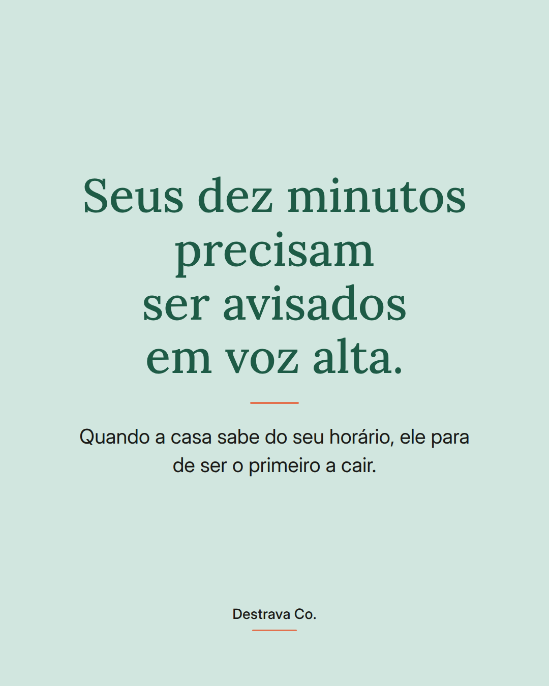
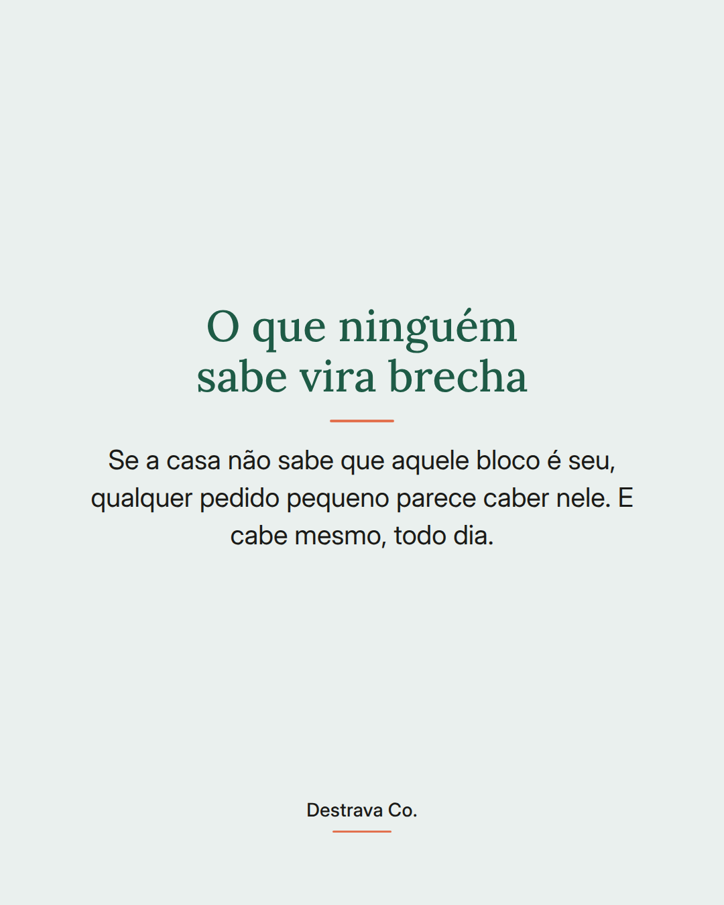
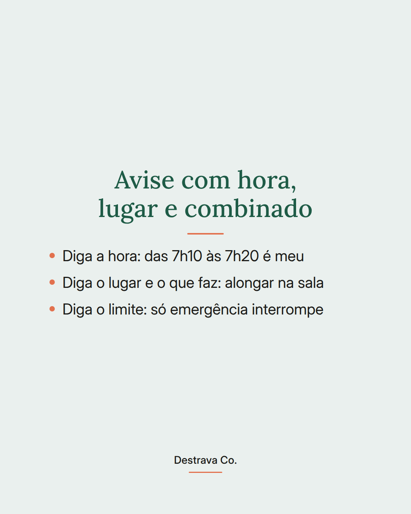
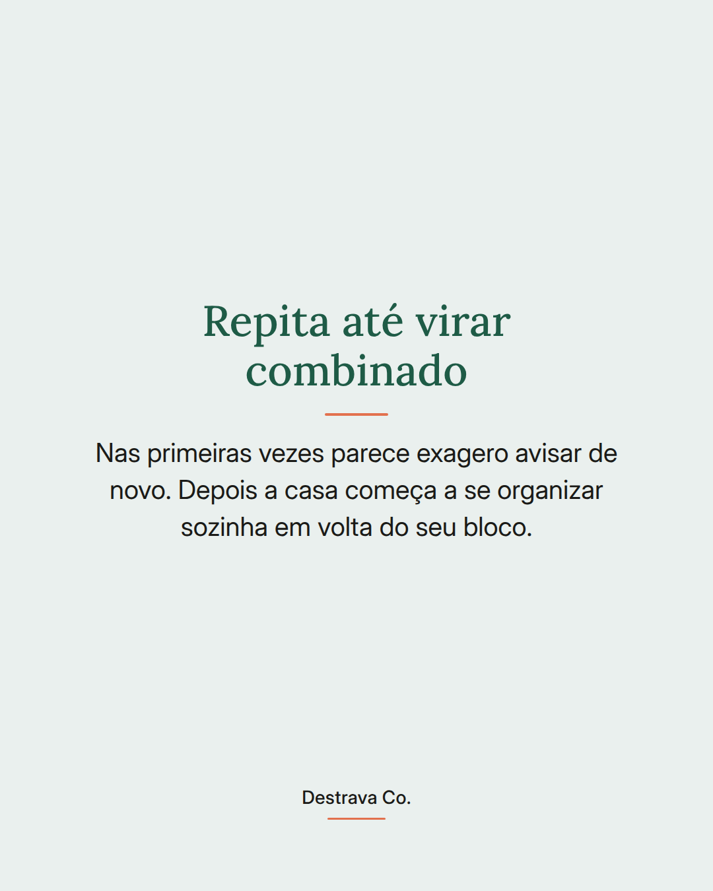
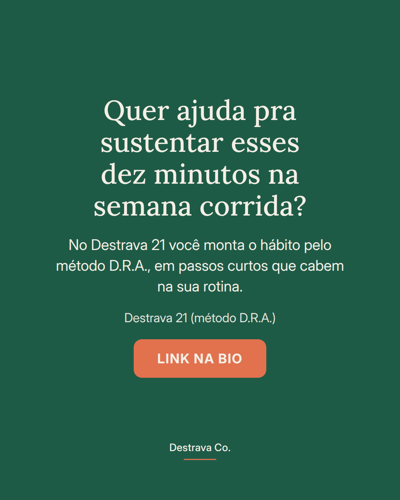
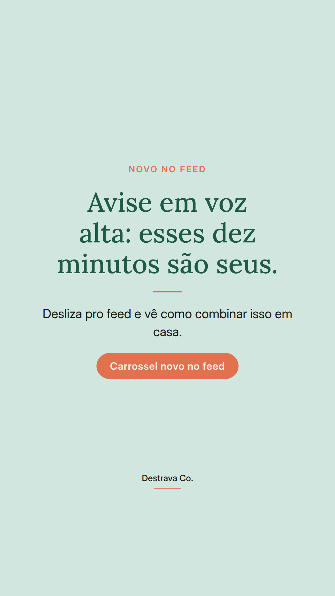
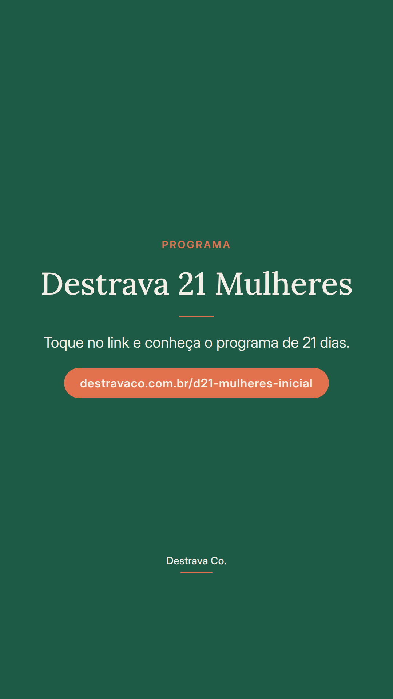

Autocuidado que ninguém sabe que existe costuma ser o primeiro a ser cancelado.
Dez minutos só seus se sustentam melhor com horário combinado em voz alta do que com força de vontade.
Quando você avisa quem mora com você que das 7h10 às 7h20 vai alongar na sala, o pedido pequeno aprende a esperar. Sem aviso, qualquer coisa ocupa o espaço.
Nas primeiras vezes parece exagero repetir o combinado. Depois a casa se organiza sozinha em volta do seu bloco, e voltar fica bem mais fácil nos dias ruins.
Salva pra lembrar de combinar isso hoje e manda pra uma amiga que vive adiando os próprios minutos. Se quiser um caminho guiado, o Destrava 21 te ajuda com o método D.R.A.